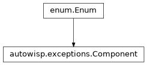
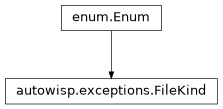
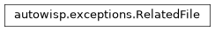

autowisp.exceptions module
Class Inheritance Diagram
![Inheritance diagram of AutoWISPError, BUIError, BadImageError, CalibrationError, CatalogError, Component, ConfigurationError, ConvergenceError, CreateLightCurvesError, DatabaseError, DependencyResolutionError, DetrendingStatError, EPDError, Enum, FileKind, FindStarsError, FitMagnitudesError, FitPSFMapError, FitStarShapeError, FormValidationError, FrozenRow, HDF5LayoutError, ImageMismatchError, MasterSelectionError, MeasurePhotometryError, NoSourcesFoundError, OutsideImageError, Path, PhotrefBindingError, PipelineError, ProjectStateError, RelatedFile, ResourceError, SolveAstrometryError, StackToMasterError, StepError, TFAError, ViewError, WorkerCrashedError, datetime, timezone](../_images/inheritance-f2eaa4982ce0d53c380f38f48742dc96c5013f0a.png)
The AutoWISP exception hierarchy.
Every exception AutoWISP raises on purpose derives from
AutoWISPError, which carries enough context (the affected
artifact(s), the pipeline run, the worker that raised it, a short
user-facing message, and an arbitrary details dict) to power CLI
messages, BUI surfacing, and post-mortem debugging from a single source
of truth. See error_handling_plan.md for the full design.
This module imports only FrozenRow from the database package
(itself dependency-free), so the hierarchy stays free of a hard
SQLAlchemy dependency.
- exception autowisp.exceptions.AutoWISPError(message: str, *, related_files: Sequence[RelatedFile] = (), pipeline_run: FrozenRow | None = None, crashed: datetime | None = None, subprocess_id: int | None = None, user_message: str | None = None, details: dict | None = None)[source]
Bases:
ExceptionBase class for every AutoWISP-raised exception.
Every concrete subclass selects a
Component.- Variables:
component (Component) – Set on each subclass; verified by tests.
related_files (tuple) – The
RelatedFileentries this error is about.pipeline_run (FrozenRow or None) – Snapshot of the
PipelineRunrow (seeFrozenRow), set by the pipeline driver when it wraps a step’s exception, or bywisp-*entry points.Nonefor runs with no DB row.crashed (datetime or None) – When the failure surfaced, filled in by the top-level handler.
subprocess_id (int or None) – PID of the multiprocessing worker that raised, when the exception travelled out of a Pool;
Nonefor errors raised in the main process.user_message (str) – Short, free of jargon, suitable for the BUI.
details (dict) – Arbitrary key/value pairs giving extra context about the failure (e.g. shape mismatches, expected/actual values, parsed config). Useful to both users and developers.
- __init__(message: str, *, related_files: Sequence[RelatedFile] = (), pipeline_run: FrozenRow | None = None, crashed: datetime | None = None, subprocess_id: int | None = None, user_message: str | None = None, details: dict | None = None)[source]
Store the context attributes (see class
Attributes).
- __reduce__()[source]
Pickle by restoring
__dict__rather than re-running__init__.Subclasses (e.g.
StepError) accept keyword-only arguments and carry context attributes that are not part ofself.args, so the default exception unpickler – which callscls(*self.args)– would both drop those fields and (for required kwargs) raiseTypeError. Reconstructing through__new__+__dict__keeps every field intact and lets the exception travel back out of a multiprocessing worker faithfully.- Returns:
(callable, args)per the pickle protocol.- Return type:
- stamp_subprocess() None[source]
Record the current PID as the raising sub-process.
Called by the worker before re-raising out of a multiprocessing Pool. Idempotent: a value already set in a deeper worker wins.
- Returns:
None
- to_detail_dict() dict[source]
Return the heavy, non-column fields for the error sidecar.
Complements the queryable columns of the
Errorrow: everything here is what does not live inline on the row – the full technical message, the complete related-file list (a superset of the artifact FKs), the arbitrarydetailsdict, and the formatted traceback (__cause__chain included). The result may still contain numpy/Path/etc. insidedetails; serialize it withjson.dump(..., default=sanitize_for_json).- Returns:
The sidecar payload (see
error_handling_plan.md).- Return type:
- with_pipeline_run(run: FrozenRow | None, *, crashed: datetime | None = None) AutoWISPError[source]
Attach a
FrozenRowsnapshot of thePipelineRun.- Parameters:
run (FrozenRow or None) – Row snapshot to attach. Built by
snapshot_row(parent) or from config primitives (worker), so host/started are already populated; nothing is reconstructed here.crashed (datetime or None) – Failure time; defaults to now if not already set on the exception.
- Returns:
self, so it can be used inline beforere-raising.
- Return type:
- exception autowisp.exceptions.BUIError(message: str, *, related_files: Sequence[RelatedFile] = (), pipeline_run: FrozenRow | None = None, crashed: datetime | None = None, subprocess_id: int | None = None, user_message: str | None = None, details: dict | None = None)[source]
Bases:
AutoWISPErrorFailure in the Django views/forms/templates of the BUI.
- exception autowisp.exceptions.BadImageError(message: str, *, step_name: str | None = None, **kwargs)[source]
Bases:
StepErrorAn image does not look like it is expected to.
- exception autowisp.exceptions.CalibrationError(message: str, *, step_name: str | None = None, **kwargs)[source]
Bases:
StepErrorFailure in the calibrate step.
- exception autowisp.exceptions.CatalogError(message: str, *, step_name: str | None = None, **kwargs)[source]
Bases:
StepErrorA problem with the reference catalog (query or coverage/consistency).
A cross-cutting
StepError– catalog trouble is not specific to one stage: a live Gaia query can exhaust its retries, and a cached catalog can fail to cover the frames or mismatch the required epoch / magnitude range / field of view during solve_astrometry, find_stars, fit_star_shape, etc. Raised as one catchable type across all of them (step_nameis stamped from the ambient context), so callers canexcept CatalogErrorregardless of which step triggered it.
- class autowisp.exceptions.Component(*values)[source]
-

Which broad part of AutoWISP an error belongs to.
- BUI = 'bui'
- PIPELINE = 'pipeline'
- STEP = 'step'
- exception autowisp.exceptions.ConfigurationError(message: str, *, related_files: Sequence[RelatedFile] = (), pipeline_run: FrozenRow | None = None, crashed: datetime | None = None, subprocess_id: int | None = None, user_message: str | None = None, details: dict | None = None)[source]
Bases:
PipelineErrorInvalid or inconsistent pipeline configuration.
- exception autowisp.exceptions.ConvergenceError(message: str, *, step_name: str | None = None, **kwargs)[source]
Bases:
StepErrorSome iterative procedure failed to converge.
- exception autowisp.exceptions.CreateLightCurvesError(message: str, *, step_name: str | None = None, **kwargs)[source]
Bases:
StepErrorFailure in the create_lightcurves step.
- exception autowisp.exceptions.DatabaseError(message: str, *, related_files: Sequence[RelatedFile] = (), pipeline_run: FrozenRow | None = None, crashed: datetime | None = None, subprocess_id: int | None = None, user_message: str | None = None, details: dict | None = None)[source]
Bases:
PipelineErrorFailure interacting with the pipeline database.
- exception autowisp.exceptions.DependencyResolutionError(message: str, *, related_files: Sequence[RelatedFile] = (), pipeline_run: FrozenRow | None = None, crashed: datetime | None = None, subprocess_id: int | None = None, user_message: str | None = None, details: dict | None = None)[source]
Bases:
PipelineErrorFailure resolving processing-step dependencies.
- exception autowisp.exceptions.DetrendingStatError(message: str, *, step_name: str | None = None, **kwargs)[source]
Bases:
StepErrorFailure computing detrending statistics.
- exception autowisp.exceptions.EPDError(message: str, *, step_name: str | None = None, **kwargs)[source]
Bases:
StepErrorFailure in the EPD detrending step.
- class autowisp.exceptions.FileKind(*values)[source]
-

The sort of file a
RelatedFilepoints at.- CALIBRATED_IMAGE = 'calibrated_image'
- CATALOG = 'catalog'
- CONFIG = 'config'
- DR_FILE = 'dr_file'
- LIGHTCURVE = 'lightcurve'
- MASTER_BIAS = 'master_bias'
- MASTER_DARK = 'master_dark'
- MASTER_FLAT = 'master_flat'
- MASTER_PHOTREF = 'master_photref'
- OTHER = 'other'
- OUTPUT = 'output'
- RAW_IMAGE = 'raw_image'
- exception autowisp.exceptions.FindStarsError(message: str, *, step_name: str | None = None, **kwargs)[source]
Bases:
StepErrorFailure in the find_stars step.
- exception autowisp.exceptions.FitMagnitudesError(message: str, *, step_name: str | None = None, **kwargs)[source]
Bases:
StepErrorFailure in the fit_magnitudes step.
- exception autowisp.exceptions.FitPSFMapError(message: str, *, step_name: str | None = None, **kwargs)[source]
Bases:
StepErrorFailure in the fit_source_extracted_psf_map step.
- exception autowisp.exceptions.FitStarShapeError(message: str, *, step_name: str | None = None, **kwargs)[source]
Bases:
StepErrorFailure in the fit_star_shape step.
- exception autowisp.exceptions.FormValidationError(message: str, *, related_files: Sequence[RelatedFile] = (), pipeline_run: FrozenRow | None = None, crashed: datetime | None = None, subprocess_id: int | None = None, user_message: str | None = None, details: dict | None = None)[source]
Bases:
BUIErrorA BUI form failed validation in a way worth recording.
- exception autowisp.exceptions.HDF5LayoutError(message: str, *, related_files: Sequence[RelatedFile] = (), pipeline_run: FrozenRow | None = None, crashed: datetime | None = None, subprocess_id: int | None = None, user_message: str | None = None, details: dict | None = None)[source]
Bases:
PipelineErrorError caused by invalid specification of HDF5 layout.
- exception autowisp.exceptions.ImageMismatchError(message: str, *, step_name: str | None = None, **kwargs)[source]
Bases:
StepErrorAttempt to combine incompatible images in some way.
- exception autowisp.exceptions.MasterSelectionError(message: str, *, related_files: Sequence[RelatedFile] = (), pipeline_run: FrozenRow | None = None, crashed: datetime | None = None, subprocess_id: int | None = None, user_message: str | None = None, details: dict | None = None)[source]
Bases:
PipelineErrorFailure selecting the master frame(s) for an image.
- exception autowisp.exceptions.MeasurePhotometryError(message: str, *, step_name: str | None = None, **kwargs)[source]
Bases:
StepErrorFailure in the measure_aperture_photometry step.
- exception autowisp.exceptions.NoSourcesFoundError(message: str, *, step_name: str | None = None, **kwargs)[source]
Bases:
FindStarsErrorSource extraction completed but found no sources in a frame.
Distinct from a generic
FindStarsErrorso the step can mark just that frame as failed and carry on (a clouded or badly defocused frame is not a reason to abort the run), while every other find_stars failure still propagates.
- exception autowisp.exceptions.OutsideImageError(message: str, *, step_name: str | None = None, **kwargs)[source]
Bases:
CalibrationErrorAttempt to access image data outside the bounds of the image.
Raised only in the calibration path, so it specializes
CalibrationErrorrather than the genericStepError.
- exception autowisp.exceptions.PhotrefBindingError(message: str, *, related_files: Sequence[RelatedFile] = (), pipeline_run: FrozenRow | None = None, crashed: datetime | None = None, subprocess_id: int | None = None, user_message: str | None = None, details: dict | None = None)[source]
Bases:
PipelineErrorFailure binding a photometric reference.
- exception autowisp.exceptions.PipelineError(message: str, *, related_files: Sequence[RelatedFile] = (), pipeline_run: FrozenRow | None = None, crashed: datetime | None = None, subprocess_id: int | None = None, user_message: str | None = None, details: dict | None = None)[source]
Bases:
AutoWISPErrorFailure in the orchestration layer (not “the algorithm”).
- exception autowisp.exceptions.ProjectStateError(message: str, *, related_files: Sequence[RelatedFile] = (), pipeline_run: FrozenRow | None = None, crashed: datetime | None = None, subprocess_id: int | None = None, user_message: str | None = None, details: dict | None = None)[source]
Bases:
BUIErrorThe BUI project is in a state that blocks the requested action.
- class autowisp.exceptions.RelatedFile(kind: FileKind, path: Path, role: str = '')[source]
Bases:
object
A file the error is about (input, output, or intermediate).
- Variables:
- exception autowisp.exceptions.ResourceError(message: str, *, related_files: Sequence[RelatedFile] = (), pipeline_run: FrozenRow | None = None, crashed: datetime | None = None, subprocess_id: int | None = None, user_message: str | None = None, details: dict | None = None)[source]
Bases:
PipelineErrorInsufficient disk / memory / CPU to continue.
- exception autowisp.exceptions.SolveAstrometryError(message: str, *, step_name: str | None = None, **kwargs)[source]
Bases:
StepErrorFailure in the solve_astrometry step.
- exception autowisp.exceptions.StackToMasterError(message: str, *, step_name: str | None = None, **kwargs)[source]
Bases:
StepErrorFailure stacking calibration frames into a master.
- exception autowisp.exceptions.StepError(message: str, *, step_name: str | None = None, **kwargs)[source]
Bases:
AutoWISPErrorFailure inside a processing step.
- Variables:
step_name (str or None) – Name of the step that failed. May be
Noneat raise time and filled in from the ambient context by the capture layer.
- exception autowisp.exceptions.TFAError(message: str, *, step_name: str | None = None, **kwargs)[source]
Bases:
StepErrorFailure in the TFA detrending step.
- exception autowisp.exceptions.ViewError(message: str, *, related_files: Sequence[RelatedFile] = (), pipeline_run: FrozenRow | None = None, crashed: datetime | None = None, subprocess_id: int | None = None, user_message: str | None = None, details: dict | None = None)[source]
Bases:
BUIErrorFailure rendering or handling a BUI view.
- exception autowisp.exceptions.WorkerCrashedError(message: str, *, step_name: str | None = None, **kwargs)[source]
Bases:
StepErrorA multiprocessing worker died without preserving its exception.
Re-raise wrapper used when a worker dies in a way that does not propagate the original exception (segfault, OOM-killer,
os._exit).A
StepError(componentstep): although the parent synthesises it – the worker cannot describe its own death – the failure is in the algorithm running inside a step, and the error belongs to that step. It is a single generic class rather than one of the per-stage subclasses because the parent has only the ambient step name, not the failing step’s exception type. Thatstep_name– stamped from the ambient context like any otherStepError– is what lets crash-report log-collection resolve the run/step whose logs to gather (seeautowisp.error_context._worker_crashed()).
- autowisp.exceptions._rebuild_autowisp_error(cls, args, state)[source]
Reconstruct an
AutoWISPErrorsubclass for unpickling.Bypasses
__init__(so keyword-only arguments on subclasses do not block unpickling) and restores bothBaseException.args(where the message lives, in C-level storage outside__dict__) and the instance__dict__directly. SeeAutoWISPError.__reduce__().- Parameters:
- Returns:
The reconstructed exception.
- Return type:
- autowisp.exceptions.collect_environment(packages=('autowisp', 'astrowisp', 'numpy', 'scipy', 'pandas', 'sqlalchemy', 'astropy'))[source]
Platform + key package versions of the current process.
Recorded into the error sidecar at crash time (by
error_persistence) so a report reflects the environment that actually produced the failure – immune to the report being built later, after packages were upgraded. Report-time provenance records the same shape for the machine building the report, so comparing the two reveals drift. Never raises.- Parameters:
packages (iterable) – Distribution names whose versions to record (the runtime stack whose combination determines whether a crash reproduces); those not installed are omitted.
- Returns:
platform/python_version/packages.- Return type:
- autowisp.exceptions.collect_resource_snapshot()[source]
Best-effort machine-memory snapshot (bytes), for diagnosing OOM.
System memory pressure is the tell for an OOM / macOS-jetsam kill: a
SIGKILLwith no native traceback plus a nearly-full machine points at memory, not a crash. The dead worker’s own peak RSS is gone by the time the parent looks, but the machine’s RAM ceiling and the parent’s RSS are strong signal. Cross-OS viapsutil(a hard dependency).Never raises – a failure yields a partial or empty dict rather than turning the recording of one error into a second error.
- Returns:
- Any of
ram_total/ram_available(bytes), ram_percent_used(percent),process_rss(bytes).
- Any of
- Return type:
- autowisp.exceptions.get_hostname()[source]
This machine’s name, recorded consistently across the pipeline.
A single source so the run host (
PipelineRun.host) and the report host (autowisp.crash_report.collect_provenance()) agree – otherwisesocket.getfqdn()in one place andsocket.gethostname()in another make one box look like two.gethostnameis preferred: it is fast and returns the clean local name rather than a reverse-DNS*.in-addr.arpaform on a loopback-only host.
- autowisp.exceptions.sanitize_for_json(obj, max_inline_array_size=64)[source]
Coerce an otherwise-unserializable object to a JSON-friendly form.
Intended as the
default=argument tojson.dump()/json.dumps when writing the error sidecar:detailsmay carry numpy scalars/arrays,Path,datetime, sets, and arbitrary objects. This is total – it never raises, so a pathological value can never turn recording an error into a second error; the last resort isrepr().Use directly (
default=sanitize_for_json) for the default threshold, ordefault=functools.partial(sanitize_for_json, max_inline_array_size=N)to override it.- Parameters:
obj – The value
jsoncould not serialize natively.max_inline_array_size (int) – ndarrays with at most this many elements are dumped in full; larger ones are summarized so a stray full-frame array cannot write hundreds of MB.
- Returns:
A JSON-serializable stand-in for
obj.